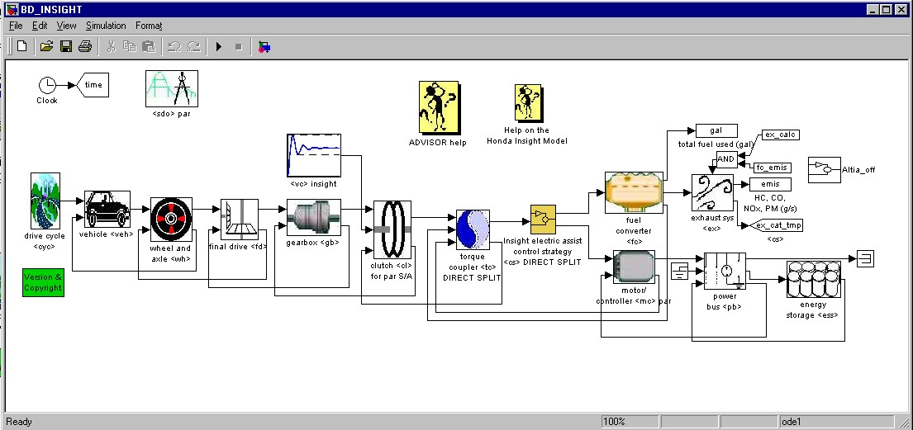
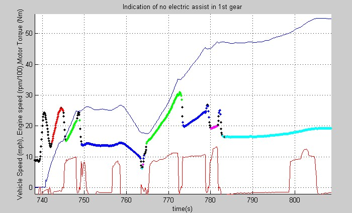
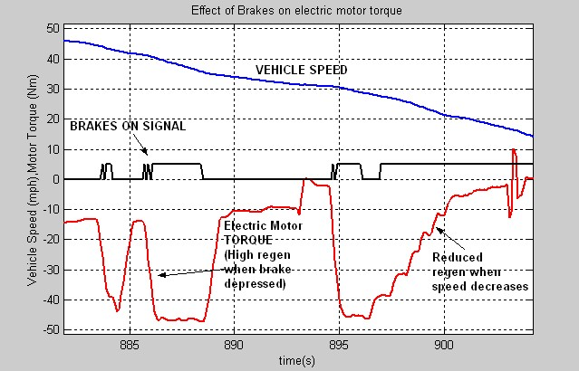
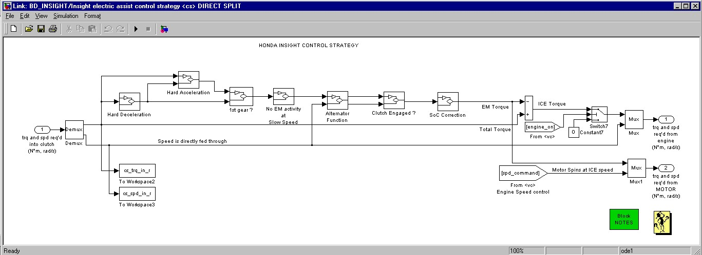
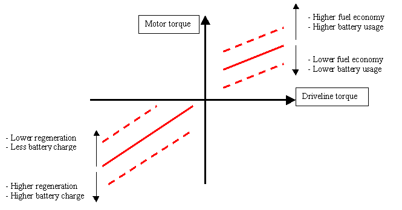
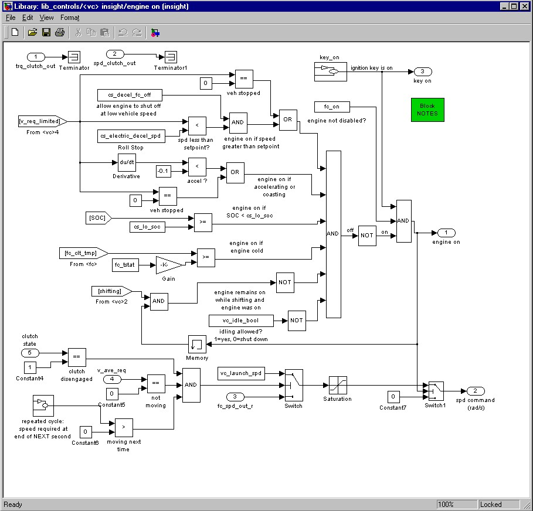

Help On the Honda Insight Model
Introduction
The control strategy
- Test data - a basis for development - A scalable control structure - Engine on/off characteristics
Insight data files
Introduction —————————————
The Honda Insight model is developed based on test data, provided by the National Renewable Energy Laboratory, Golden, Colorado, and Argonne National Laboratory, Illinois. The model aims at describing the control strategy and the characteristics of the Honda Insight drivetrain.
The following is the base block diagram used in the simulation of the Insight. Here, the control block directly commands the torques required from the 2 power sources namely the IC engine and the electric motor.

The Honda Insight Torque Split control strategy is explained below. This is developed as a result of test data analysis and observation of component behaviour. This model is scalable, and can be used by the user, to define his own control strategy.
The control strategy block <cs> receives the torque required into the clutch. Based on this value and the vehicle speed, the electric motor torque contribution is calculated. The remaining torque is demanded from the IC engine. The electric motor torque is decided based on the following criteria:
- When accelerating, based on the torque and rate of acceleration, the electric motor assists the IC Engine, producing around 10 Nm of torque. - During regeneration,(in reality, when the brake is depressed), the electric motor regens a portion of the negative torque availabe to the driveline. - At low vehicle speeds, typically below 10 mph, the braking is primarily only the friction brakes. - There is no electric assist in the first gear.
Test data from NREL and ANL were analysed to determine the hybrid powertrain characteristics. Shown below, are some characteristics, based on which the model has been developed.
The following graph depicts the contribution of the electric motor torque based on the total driveline torque. The motor is seen to produce around 10 Nm of torque during assist.

The Insight IMA does not usually assist the IC Engine during 1st gear. The following graph depicts this phenomenon from test data:

This above plot shows engine rpm, COLOR CODED by gear ratio. (RED-1st gear, GREEN-2nd gear, BLUE-3rd gear, MAGENTA-4th gear, CYAN-5th gear, BLACK-unknown gear ratio / slip). The electric motor torque is shown by BROWN. It is clearly seen that the motor does not assist in first gear.
The Insight electric motor regeneration torque depends on the application of the brakes. Also, regeneration reduces, if the vehicle slows down (typically belolw 10 mph). The following plot depicts this phenomenon from test data.

The following shows the control strategy block in ADVISOR for the Honda Insight.

The following conditions are incorporated in the above model:
- In the above block, the torque request is analysed for acceleration (positive torques) or deceleration (negative torques). - The 1st gear condition is checked. Also, at slow speeds, the motor remains inactive. - Since there is no separate alternator in the Insight, the electric motor has to function as the alternator. Thus, the electric motor generates a small current, based on the power required by the accessories. The battery pack supplies the electrical accessory loads when the motor assists the engine. - The clutch has to be engaged for the electric motor to regenerate some of the energy from braking. - The battery SoC is checked, since it affects the operation of the motor at low and high ranges of SoC.
The electric motor torque is decided based on the above criteria and the remaining torque is requested from the IC engine. Since the motor and the IC engine are connected to the same shaft, the controlled IC engine speed is requested from the electric motor also.
A user can now change the above strategy using input variables, and can define a new strategy. The scheme of the control strategy is shown below:

The strategy is used to determine the electric motor torque based on the total driveline torque requested from the 2 power sources (IC engine and motor). The electric motor torque is calculated based on a slope-point formulation, as shown above. The following variables are used:
|
Variable
|
Description
|
|
cs_dl_assist_trq_threshold
|
Driveline torque threshold below which the electric machine does not assist
|
|
cs_mc_assist_min_frac
|
Minimum Torque normally provided by the electric motor when driveline torque exceeds threshold (as a fraction of max torque)
|
|
cs_mc_assist_slope
|
Fraction (slope of the line) of the driveline torque provided by the electric motor when the driveline torque exceeds threshold
|
|
cs_mc_assist_max_frac
|
Maximum motor torque requested from the motor during assist (as a fraction of max torque)
|
|
cs_dl_regen_trq_threshold
|
Driveline regenerative torque threshold above which the electric machine does not regen at low speeds
|
|
cs_mc_regen_min_frac
|
Minimum regen Torque normally provided by the electric motor when driveline torque exceeds regen threshold (as a fraction of max regen torque)
|
|
cs_mc_regen_slope
|
Fraction (slope of the line) of the negative driveline torque regenerated by the electric motor when the driveline torque exceeds threshold
|
|
cs_mc_regen_max_frac
|
Maximum regen motor torque requested from the motor during regeneration/braking (as a fraction of max regen torque)
|
|
cs_decel_regen_threshold
|
Speed during deceleration below which the electric motor does not regenerate (all emphasis on friction braking)
|
|
The following shows the effect of varying the structure of the strategy.

For the Honda Insight, the engine remains on in most cases. The following criteria define when the engine is allowed to shut off. The engine in the Insight will only shut down if all of the following conditions are satisfied:
- engine is warm (as determined from fc_clt_tmp >= vc_fc_warm_frac*fc_tstat)
- battery SOC is greater than the low SOC set point
- vehicle is decelerating or stopped
- vehicle speed is less than cs_electric_decel_spd (set at 4.5 m/s (10 mph))
- vehicle is not shifting gears
A boolean (cs_decel_fc_off) was added to allow for an override of the engine off condition during low speed decelerations. When driving the actual vehicle, this can be done by not putting the vehicle in neutral during decelerations. The boolean is defined in the powertrain control file (PTC_INSIGHT) and has a default value of 1 (1 allows the engine to shut off during decel, 0 keeps the engine on during decel).
The engine ON/OFF function for the Insight is shown below. This block is inside the vehicle controls <vc> block.

Data Files
The following information describes main parameters defined in the Insight vehicle setup files.
PTC_INSIGHT
The Insight’s powertrain control model is based on test results and test data from NREL and ANL. The HONDA INSIGHT tests provided enough test data to understand the actual vehicle characteristics and the functions of the Integrated Motor Assist(IMA).
The following indicate some of the characteristics of the vehicle control strategy.
The Insight engine’s idle speed 94 rad/s (900 rpm) was taken from from NREL testing. Two parameters were added:
cs_decel_fc_off allows the engine to be shut off during low speed decelerations, and
cs_electric_decel_spd = 4.5 m/s (10 mph) defines the vehicle speed below which the engine can shut off.
vc_fc_warm_tmp_frac = 0.85 (–) defines the fraction of the coolant temperature at which the engine is assumed to be warm and is allowed to shut down once started.
The following parameters were removed from the file since they are not used in the Insight controls:
cs_electric_launch_spd - the Insight has no electric launch capability
cs_off_trq_frac - the Insight engine does not shut down based on engine load
The following parameter values have been updated to correspond to actual vehicle operation:
cs_hi_soc = 0.80
cs_lo_soc = 0.20
VEH_INSIGHT
The Insight vehicle is defined by the following published parameters:
veh_mass = 1000 kg, vehicle mass 2200 lbs with AC, Automotive Engineering, Oct ’99
battery_mass = 20 kg, Automotive News, July 12, 99
engine_mass = 60 kg, Automotive Engineering, Oct ’99
vehicle_height = 1.325 m, Automotive Engineering, Oct ’99
vehicle_width = 1.695 m, Automotive Engineering, Oct ’99
veh_CD = 0.25, coefficient of aerodynamic drag, Automotive Engineering, Oct ’99
veh_FA = 1.9 m2, taken from Car & Driver, Jan ‘00
veh_wheelbase = 2.4 m, Automotive Engineering, Oct ’99
All other vehicle parameters are from ADVISOR’s small car defaults.
FC_INSIGHT
The current data for the 1.0L Honda Insight VTEC-E Engine comes from actual testing from Argonne National Labs (ANL). Fuel use data is obtained from their testing. Currently, emissions data has not been included in the model.
peak power – 50 kW at 5700 rpm (engine only without IMA)
peak torque - 89.5 Nm at 4800 rpm (engine only without IMA)
EX_SI_CC
ADVISOR’s standard close-coupled catalyst is used in the current model. The Insight catalyst is a lean-burn, NOx adsorption catalyst that is close coupled to the engine. An improved catalyst model will be incorporated as data becomes available.
ESS_NiMH6
The battery pack of the Honda Insight is a Nickel Metal Hydride (NiMH) pack. Analysis of this battery pack was performed by NREL’s Battery Thermal Management (BTM) group. Data in the model file is from their testing of the pack.
Key published battery parameters used in the model include:
> battery type – Nickel metal hydrid (NiMH)
> cell voltage – 1.2 V
> total cells – 120 cells (6 cells x 20 modules)
> total voltage – 144 V
> rated capacity – 6.5 Ah
MC_INSIGHT_draft
The electric motor model is based on ADVISOR’s MC_PM49 (Data Source: Honda R&D Americas). This is a 49kW motor that has been scaled down to 10kW. Maximum torque curve has been updated based on published speed vs. torque for the Insight engine and engine with integrated motor assist (Honda presentation at UC Davis Ultra-Clean Vehicle Workshop). Key operating points that were incorporated into the model include:
power – 10 kW at 3000 rpm
peak power of engine plus integrated motor assist – 54.4 kW at 5700 rpm
peak torque of engine plus integrated motor assist – 123.4 Nm
mass – 60 kg
TX_5SPD_SI_INSIGHT
The Insight transmission model is based on ADVISOR’s TX_5SPD_SI and modified to reflect published Honda Insight gear ratios (data source: Car & Driver, Jan ’00). Published gear ratios are shown below:
Final drive 3.21:1
1st gear ratio 3.46
2nd gear ratio 1.75
3rd gear ratio 1.10
4th gear ratio 0.86
Note: The gear shifting pattern is based on vehicle speed, according to test procedures laid out by the EPA. It can be set to ADVISOR’s default engine load and speed-based strategy, by setting the variable “tx_speed_dep” to 0. (default=1)
WH_INSIGHT
The Insight tire model is based on ADVISOR’s WH_SMCAR model. The only update to this file is the wheel radius (0.275 m) which was calculated from mph/1000rpm data from Car&Driver 1/2000
Gear I 5.8 mph/1000rpm, 3.46 gear ratio
Gear II 11.5 mph/1000rpm, 1.75 gear ratio
Gear III 18.3 mph/1000rpm, 1.10 gear ratio
Gear IV 23.4 mph/1000rpm, 0.86 gear ratio
Gear V 28.3 mph/1000rpm, 0.71 gear ratio
This could also be calculated from Honda Insight wheels P165/65R14 78S low rolling resistance
wheel diameter = (2*165*.65)+ 14"(25.4)= 0.5701 m
wh_radius = wheel diameter/2 - squish (assumed squish of 10mm)
Back to ADVISOR Documentation Contents
Back to Chapter 3
created: 8/18/00 (tm,kk)
Modified based on new model: 08/07/01 (ar)